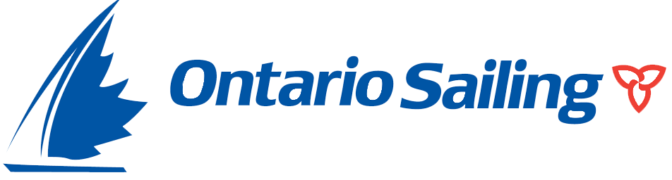

I currently hold the following certifications:

- CANSail Fundamentals Course: Successfully completed the CANSail Fundamentals Course over 5 weeks with the Ontario Sailing Association in the fall of 2016. The skills learned included the fundamentals of create a proper lesson plan for sailing, how to evaluate the safety of a situation, and how to resolve problems associated with elite athletes (more specifically those associated with sailing).
- Boat Safety Course: Completed Boat Safety Course in April 2017
- CANSail 1 & 2 Trained Certification: Completed CANSail 1 & 2 Instructor Course in May of 2017.
- CANSail 1 & 2 Certification Course Completed in May 2019
- LTSD: Completed the Long-Term Sailing Development Online Course.
- Pleasure Craft Operators Card: License to drive all power boats and personal water craft.
- Powered Vessel Operator's permit: License to drive power boats in the inner and outer harbors of Toronto Standard First aid with CPR & AED: Successfully completed Standard First Aid Level C Course with Toronto CPR in August 2016

- Canadian Ski Coaching Federation Entry Level (EL) Trained Course: Successfully completed a 2-day entry level coaching course in March 2016 at Craigleith Ski Club. This certification allows me to coach both beginner skiers and ski racers.
- Canadian Ski Coaching Federation EL Certification Process: Was shadowed for a day by a High Performance (HP) Level coach to get EL certified status.
- Canadian Ski Coaching Federation Development Level (DL) Trained Certification: Successfully completed a 5-day Development level coaching course in February 2017 at Craigleith Ski Club. This certification allows me to set Slalom and Giant Slalom courses in accordance with the rules set by the Federation of Independent Skiers. Two Days of the course were spent Learning NCCP coaching Theory relevant to all sports.
- First aid with CPR & AED: Successfully completed Standard First Aid Level C Course with Toronto CPR in August 2016

- Canadian Ski Instructors' Alliance Level One Certified Course: Successfully completed a 2-day level one instructor course in March 2019 at Craigleith Ski Club. This certification allows me to instruct all ages of beginner skiers, with zero on-snow expirience.
- Canadian Ski Instructors' Alliance Level Two Certified Course: Successfully completed a 4-day level two instructor course in April 2019 at Whistler Blackcomb. This certification allows me to teach skiers up to intermediate parallel skill level.
- First aid with CPR & AED: Successfully completed Standard First Aid Level C Course with Toronto CPR in August 2016
- Successfully completed Workplace Hazardous Material Information System training session as well as Health and Safety Awareness certification on September 30th 2017 through Queen's University